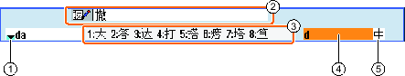
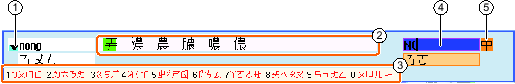

Using the input editor IME (Input Method Editor), you can select Asian characters on classic panels (without touch operation) where you enter the phonetic notation. These characters are transferred into the user interface.
| Note |
Call the input editor with <Alt + S>The input editor can only be called there where it is permissible to enter Asian characters. |
The editor is available for the following Asian languages:
-
Simplified Chinese
-
Traditional Chinese
Input types
Input type | Description |
|---|---|
Pinyin input | Latin letters are combined phonetically to denote the sound of the character. The editor lists all of the characters from the dictionary that can be selected. |
Zhuyin input (only traditional Chinese) | Non-Latin letters are combined phonetically to denote the sound of the character. The editor lists all of the characters from the dictionary that can be selected. |
Entering Latin letters | The characters that are entered are directly transferred into the input field, from where the editor was called. |
Structure of the editor
① | Phonetic sound selection from the dictionary |
② | Learning function of the dictionary |
③ | Listed characters |
④ | Phonetic sound input |
⑤ | Function selection |
Example: Pinyin input
① | Phonetic sound selection from the dictionary |
② | Listed characters (for the input field) |
③ | Listed characters (for phonetic sound input) |
④ | Phonetic sound input |
⑤ | Function selection |
Example: Zhuyin input
Functions
| | Pinyin input |
| | Entering Latin letters |
Editing the dictionary |
Dictionaries
The simplified Chinese and traditional Chinese dictionaries that are supplied can be expanded:
If you enter new phonetic notations, the editor creates a new line. The entered phonetic notation is broken down into known phonetic notations. Select the associated character for each component. The compiled characters are displayed in the additional line. Accept the new word into the dictionary and into the input field by pressing the <Input> key.
Using any Unicode editor, you can enter new phonetic notations into a text file. These phonetic notations are imported into the dictionary the next time that the input editor is started.